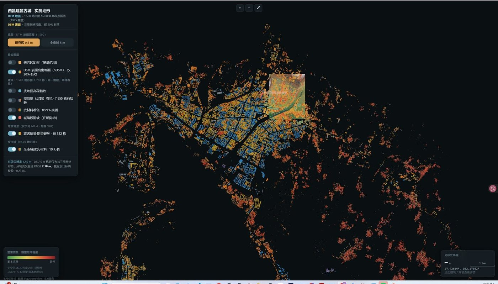
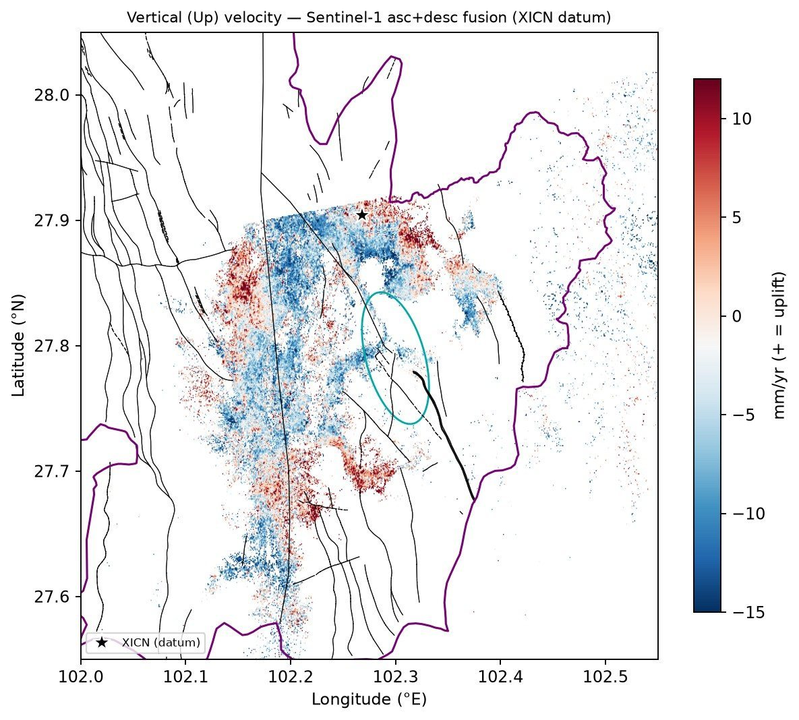
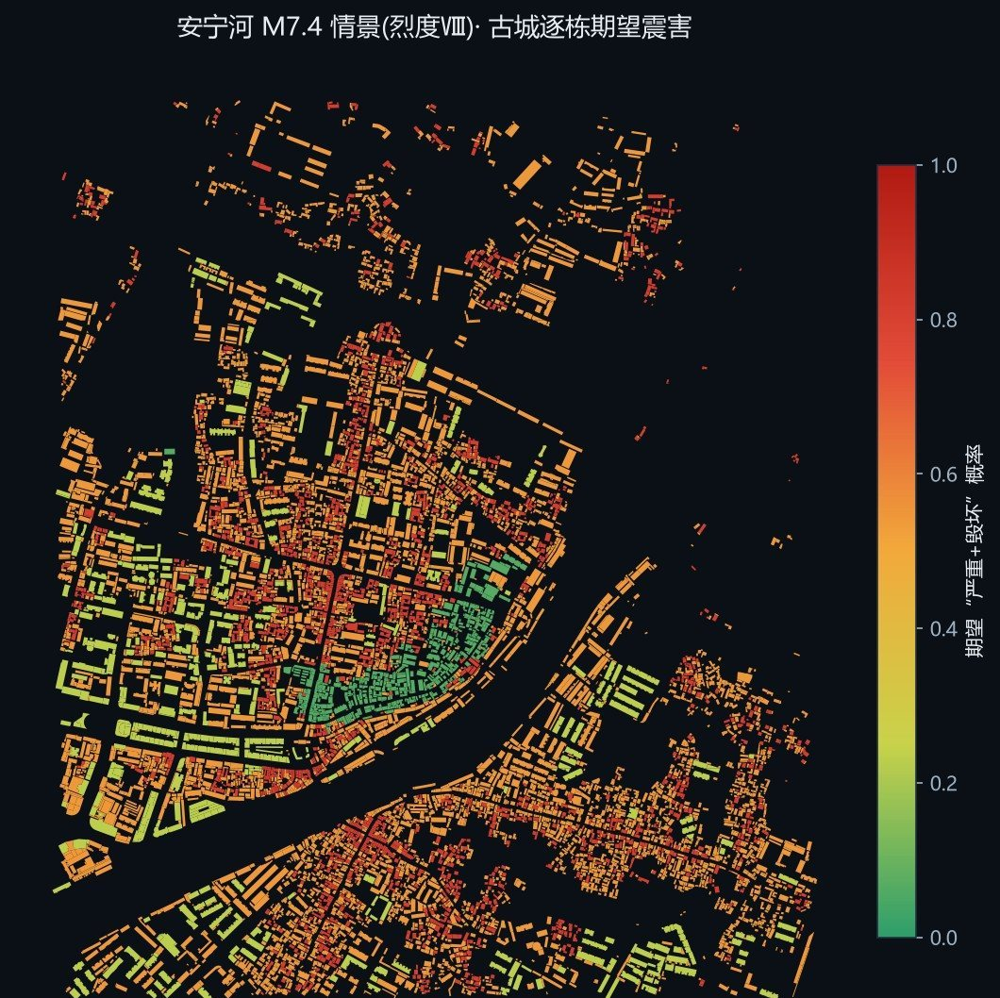
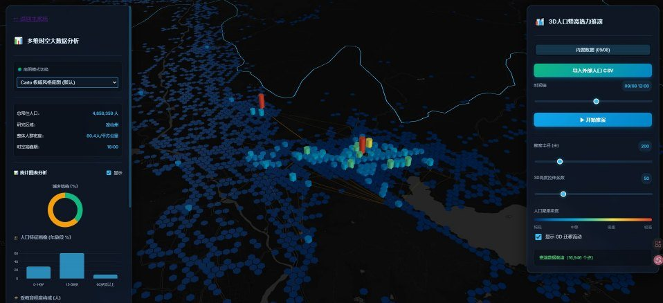
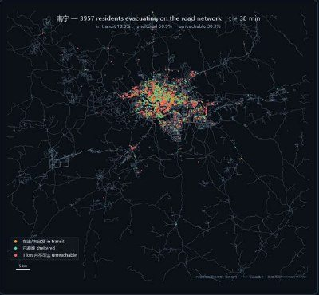
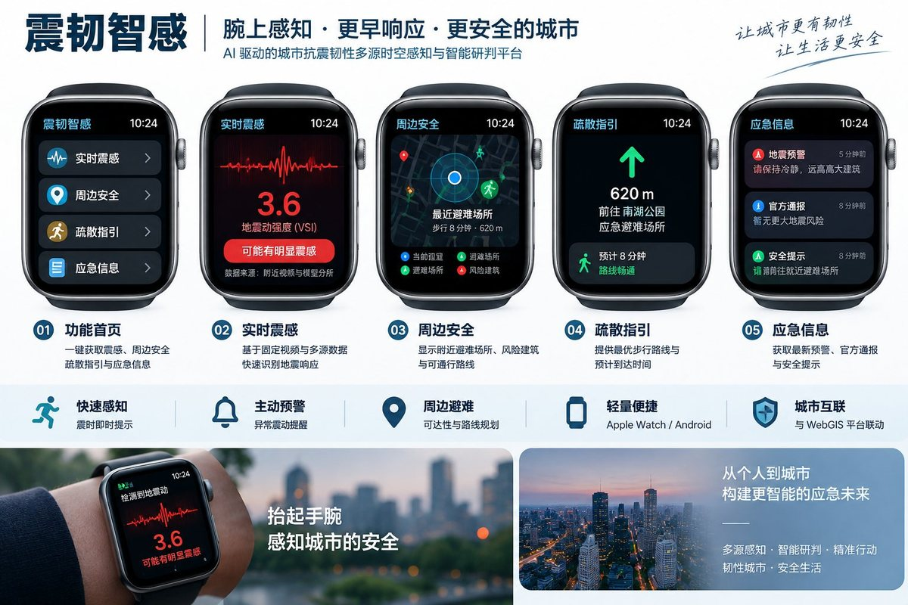

震后 60 分钟，城市要知道先查哪里、人往哪去、依据是什么
震韧智感把 InSAR 形变、固定视频、逐栋建筑、动态人口、道路与避难资源组织成分级证据：专业模型负责计算，AI 负责编排证据，专业人员负责最终决策。
城市级多智能体疏散推演：道路容量、避难场所容量、动态重路由与人口守恒同时约束。画面为单一随机种子的情景回放，用于展示系统规模与交互方式，不构成疏散预测或官方预案。
观看完整演示 8:17应急管理者缺的不是更多数据，而是一条能行动的证据链
专业台网给得出震级与位置，却给不出城市里“先查哪一栋、人往哪条路走”。平台补的是台网与现场之间这一层。
-
T − 震前
风险基线
形变、建筑脆弱性、避难资源分散在不同系统
InSAR、逐栋承灾体、道路与避难资源叠成一张可复算的风险底图
-
T + 0–10 min
快速感知
“哪里先查”仍依赖人工经验
复用既有固定视频提取相对震感线索，质量门剔除不可用结论
-
T + 10–60 min
任务编排
建筑、人口、路网、避难容量缺少统一优先级
AI 编排专业证据，输出 Top-N 核查清单与疏散压力测试
-
恢复 · 复盘
全程留痕
结果常缺版本、来源、参数与复核状态
保留任务号、参数版本、证据等级与人工复核记录
四个产品包，按场景组合交付
- QuakeSense Base
- InSAR、建筑、路网与避难资源风险基线风险底图 · 数据字典 · 重点核查候选
- QuakeSense Response
- 视频相对震感、质量门与 0–60 分钟任务编排Top-N 核查清单 · 证据包 · 报告与 API
- QuakeSense Evac
- 容量约束、动态重路由、人口守恒与生活圈评估疏散压力测试 · 瓶颈清单 · 情景回放
- QuakeSense Edge
- 本地边缘节点、断网缓存与手表 / Android 端侧本地部署 · 穿戴端 · 培训运维
从卫星形变到手腕上的疏散指引
以下均为项目已有原型与分析成果。每张图都注明了口径——情景是情景，推定是推定。






四条红线
应急场景里，一个被误读的数字比没有数字更危险。
- 不替代法定地震预警与烈度评定只接入权威预警与速报；视频只输出相对震感线索和证据等级。
- 不让大模型直接生成风险值或伤亡数量化结论由专业模型产生；AI 只做编排、检索与报告辅助。
- 高风险行动不自动执行100% 人工复核，保留复核人、时间、版本与证据包。
- 不夸大仿真结果明确区分实测、模型、内部情景与推定集四类口径及适用边界。
孟刚
同济大学建筑与城市规划学院建筑系 副教授 · 博士生导师
研究方向为建筑技术、智能建筑设计与建造，所在学科团队为建筑智能设计与建造。1994 年起在同济大学建筑系任教，2009 年作为访问学者赴德国斯图加特大学交流；同济大学建筑设计研究院（集团）有限公司都市建筑设计院注册建筑师。
边春霖
同济大学建筑学博士研究生 · 新西兰梅西大学访问学者，师从同济大学孟刚教授。
研究机构：同济大学抗震韧性与城市更新课题组。
长期从事城市抗震韧性、城市更新、InSAR 地表形变监测与多智能体疏散模拟研究，负责平台总体技术路线与系统集成。2022 年获国家留学基金委资助赴梅西大学访学。
- 代表论文
- Bian C, Meng G, Yang L, et al. Modeling seismic resilience and hospital evacuation: a comparative analysis of multi-agent reinforcement learning and classical evacuation models. Buildings, 2026, 16(8): 1538.
- 知识产权
- 授权实用新型专利 2 项（雷达角反射器）
软件著作权 4 项（InSAR 遥感监测与地理空间分析） - 学术荣誉
- 第 15 届中日韩地理学联合会议 青年地理学家奖 · 最佳论文（2023，首尔）